CE Express Only Administrator Guide v7.2
Version: CE Express v7.2
Cellular Expert Express Administrator Guide 7.2

About Cellular Expert Cellular Expert UAB (CE) developed ultra-fast wave propagation, communication systems deployment planning and radio/optical visibility calculation software for ESRI’s ArcGIS mapping environment, which is widely used within Telecom, Defense, IoT, and other companies and organizations. CE’s communication network planning, network asset management, operational support software and customer- tailored solutions enhance the intelligence and business efficiency of more than 170 communication network companies, regulators, and defense organizations in more than 50 countries. Copyright © 2026 UAB CELLULAR EXPERT. All rights reserved. Cellular Expert and Cellular Expert logo are registered trademarks, @cellular-expert.com and www.cellular-expert.com are service marks of UAB CELLULAR EXPERT in Lithuania and some other countries.
Cellular Expert Express Administrator Guide 5.8 1. System requirements Welcome to Cellular Expert. This chapter will guide you through the minimal hardware and software requirements. Note: requirements can vary significantly, depending on acceptable calculation time task complexity, and size of the database.
1.1 Minimum hardware requirements
Processor (CPU): Minimum: 4 cores, hyperthreaded Recommended: 8 cores Optimal: 16 cores Optional Requirements for GPU-accelerated calculations GPU – any NVIDIA GPU with CUDA capabilities (https://developer.nvidia.com/cuda-gpus) Driver version: 456.38 or later CUDA Toolkit 11.or to 12.4 (recommended) Memory/RAM Minimum: 16 GB Recommended: 32 GB Optimal: 64 GB or more Storage Minimum: 500 GB of free space Recommended: 2TB or more of free space on a solid-state drive (SSD)
1.2 Minimum requirements for software
Cellular Expert Express runs on Microsoft Windows Server 2016 or higher. It requires: ArcGIS Enterprise server 10.8.1 or later (11.5 supported) Standard or Advanced licence (Portal for ArcGIS included) with: - ArcGIS DataStore - WebAdapter for IIS to configure ArcGIS server - WebAdapter for IIS to configure ArcGIS portal IIS webserver (or Apache server) with SSL enabled: required for ArcGIS server and CE Express SQL Database management system PostgreSQL (download from my.esri.com) Microsoft Visual C++ 2015-202x for ESRI products
Cellular Expert Express Administrator Guide 5.8
1.3 CE Express architecture examples
1.3.1 ArcGIS Enterprise & CE Server-Express on premises deployment simplified architecture Clients Servers 1: ArcGIS Web Adaptor ArcGIS Portal Web Browser ArcGIS GIS Server Users (Editors & ArcGIS Datastore Viewers) CE Express Frontend 3. ArcGIS Pro + CE Desktop 2. CE Express backend, API for Advanced PostgreSQL Users Technical requirements: 1. Server for ArcGIS SW: ArcGIS Web Adaptor (Esri ref URL); ArcGIS Portal (Esri ref URL); ArcGIS GIS Server (Esri ref URL); ArcGIS Data Store (Esri ref URL); CE Frontend (it could be installed together with the CE Express backend) CPU: Minimum 1 core Recommended 8 cores Optimal 16 cores RAM: Minimum 8 GB Recommended 16 GB Optimal 32 GB Storage: Minimum 500 GB of free space SPTTH
Cellular Expert Express Administrator Guide 5.8 Recommended 2TB (Note 1) 2. CE Express: CPU: 32 cores RAM: 64 GB Storage: 1+ TB (Note 2) 3. ArcGIS Pro: CPU: 4 cores RAM: 16 GB Storage: 1 TB Optional Requirements for GPU-accelerated calculations: GPU – any NVIDIA GPU with CUDA capabilities (https://developer.nvidia.com/cuda-gpus) Driver version: 456.38 or later CUDA Toolkit 11.0 to 12 1.3.2 ArcGIS Enterprise & CE Server-Express on premises or cloud deployment architecture Clients Servers 2. Portal for ArcGIS 1: ArcGIS Web Browser WebAdaptor Users (Editors & Viewers) 3. ArcGIS 4. ArcGIS GIS Server DataStore 7. ArcGIS Pro 5. CE + CE Desktop Express for Advanced backend + Users PostgreSQL 6: CE Frontend (IIS)
SPTTH
Cellular Expert Express Administrator Guide 5.8 Technical requirements: 1. ArcGIS Web Adaptor (Esri ref URL): CPU: 1 core RAM: 32 GB Storage: 512 GB 2. ArcGIS Portal (Esri ref URL): CPU: 4 cores RAM: 32 GB Storage: 1 TB 3. ArcGIS GIS Server (Esri ref URL): CPU: 4 cores RAM: 32 GB Storage: 512 GB 4. ArcGIS Data Store (Esri ref URL): CPU: 1 core RAM: 32 GB Storage: 1+ TB (Note 1) 5. CE Server-Express: CPU: 32 cores RAM: 64 GB Storage: 1+ TB (Note 2) 6. CE Frontend (it could be installed together with the ArcGIS Webadaptor): CPU: 1 core RAM: 8 GB Storage: 128 GB 7. ArcGIS Pro: CPU: 4 cores RAM: 16 GB Storage: 1 TB Note 1: ArcGIS Data Store shall contain the background maps, imaging and other general GIS data. The required storage capacity is to be confirmed in consultation with the client and/or GIS data vendor. Note 2: CE Server-Express shall store locally the GIS raster data (GeoTIFF) needed for calculations (DEM, DSM, DHM). The required storage capacity to be confirmed in consultation with the client and/or GIS data vendor and dependent on the ultimate choice for GIS resolution: 0.2/0.5/1/2 m. or lower. Likely some combination of resolutions may be logical (e.g. 1 m or below for urban/suburban areas, and 2 m or 5 m for rural), also possible limiting the GIS data coverage to just the Area of interests. 2. Installation Guide This topic provides detailed instructions for Cellular Expert Server solution installation. It describes the installation, configuration, data loading path and steps to setup and start Cellular Expert Express solution.
2.1 Installation files
- CE Express Setup file provided “CE_Express_7.2_winInstall(x64).exe”. It will automatically install:
Cellular Expert Express Administrator Guide 5.8 CE Express DB schema CE Express (frontend and backend) CE Express demo data
2.2 Prerequisites
2.2.1 ArcGIS Server Install ArcGIS for Server following the official installation guide: https://enterprise.arcgis.com/en/server/latest/install/windows/steps-to-get-arcgis-for-server-up-and-running.htm Use FQDN everywhere in the installation. Arcgis Image Server is recommended but optional for publishing layers from CE Express. 2.2.2 PostgreSQL Install PostgreSQL following the guide: https://www.enterprisedb.com/docs/supported-open-source/postgresql/installer/02_installing_postgresql_with_the_graphical_installation_wizard/windows/
2.3 Install CE Express
Execute the provided CE Express installation file (“CE_Express_6.0_winInstall(x64).exe”) and proceed by
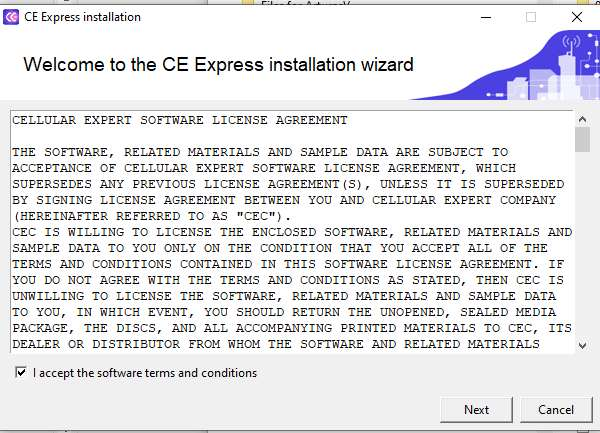
following the instructions displayed on the screen. 2.3.1 Accept the software terms and conditionsCellular Expert Express Administrator Guide 5.8 2.3.2 Prepare installation folders CE express server installation and CE Express data folders could be left as default. CE Express frontend folder could be set under IIS webserver, usually “C:/inetpub/wwwroot”. The folder "ceexp" needs to be created manually if it doesn't exist. 2.3.3 Prepare CE Express server configuration: Enter Portal for ArcGIS URL. Enter Portal for ArcGIS username, which will be used to login into CE Express. The same user will
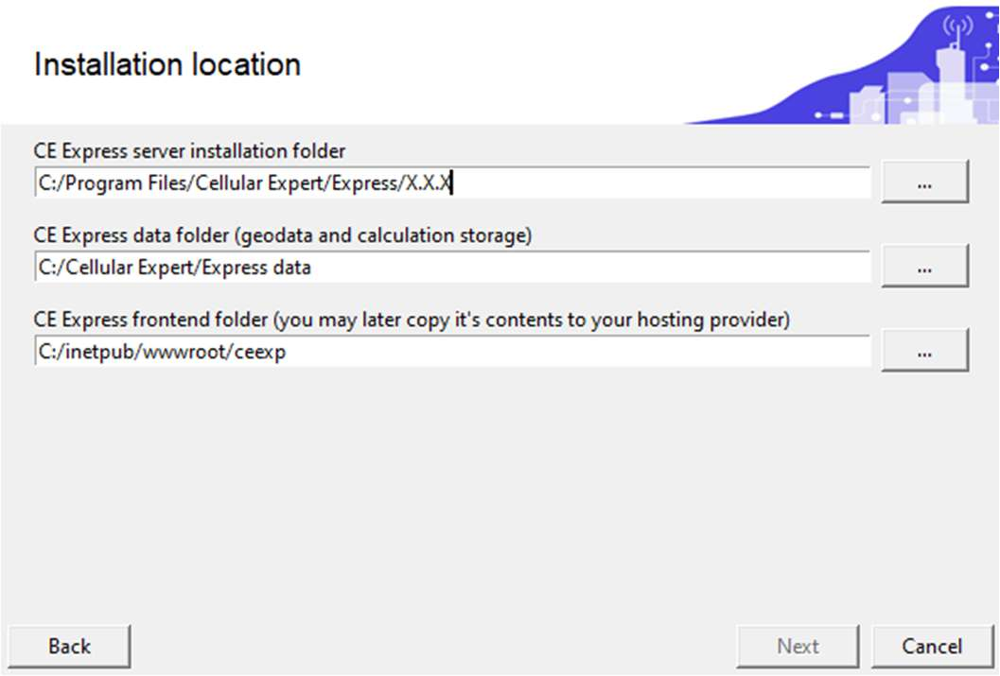
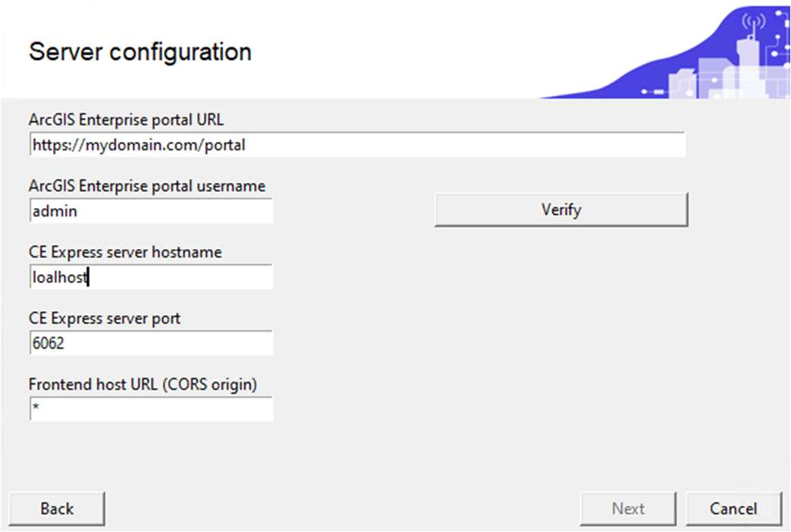
be assigned to the administrator group. Enter CE Express server hostname. Use FQDN for the hostname. Enter CE express server port. It could be changed if 6062 will be occupied after verification. Enter CE express frontend host URL (http(s)://[hostname]) or leave the “*” Click verify and wait for the messages:Cellular Expert Express Administrator Guide 5.8 Click “Next” 2.3.4 Prepare CE Express server DB configuration. Enter the hostname of PostgreSQL database. If the database is on the same server, could be left
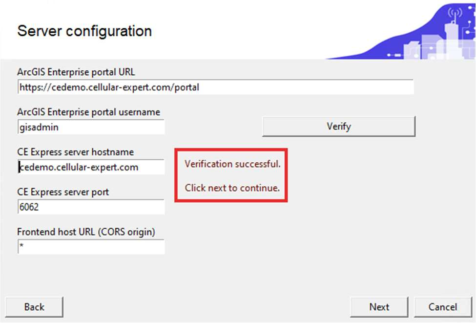
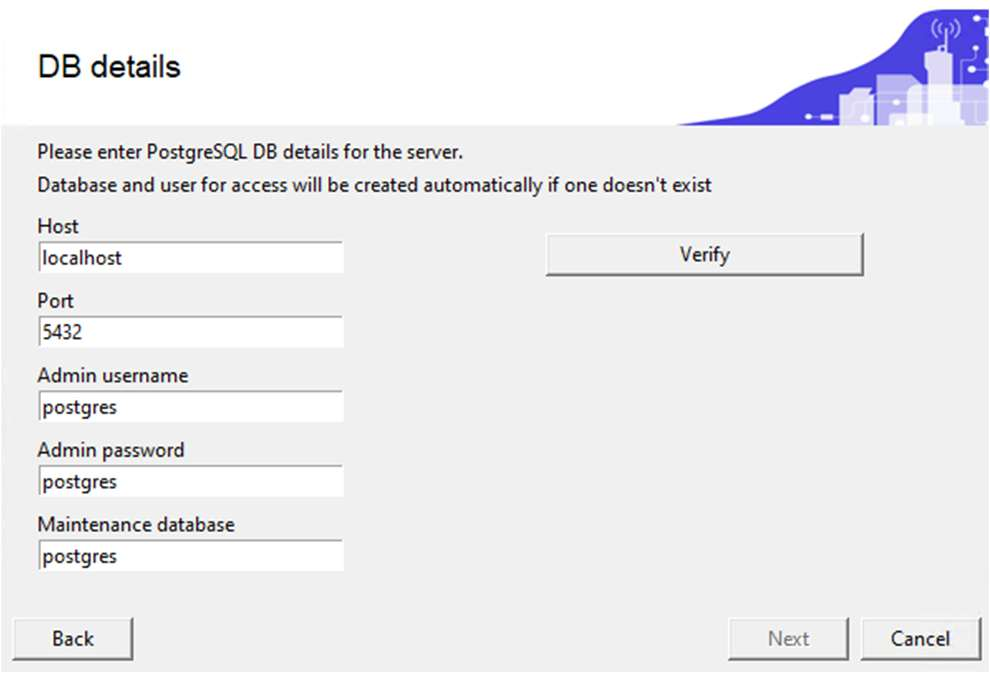
“localhost”. Enter the port of the PostgreSQL database. Usually, it is 5432. Enter admin user of PostgreSQL database. Usually, it is “postgres”. Enter the password for the admin user of the PostgreSQL database. Enter the maintenance database of the PostgreSQL database. Usually it is “postgres”. Click on the “Verify” button and wait for the messages:Cellular Expert Express Administrator Guide 5.8 If a database schema named "ce_express" exists, you will be notified during the installation process. In
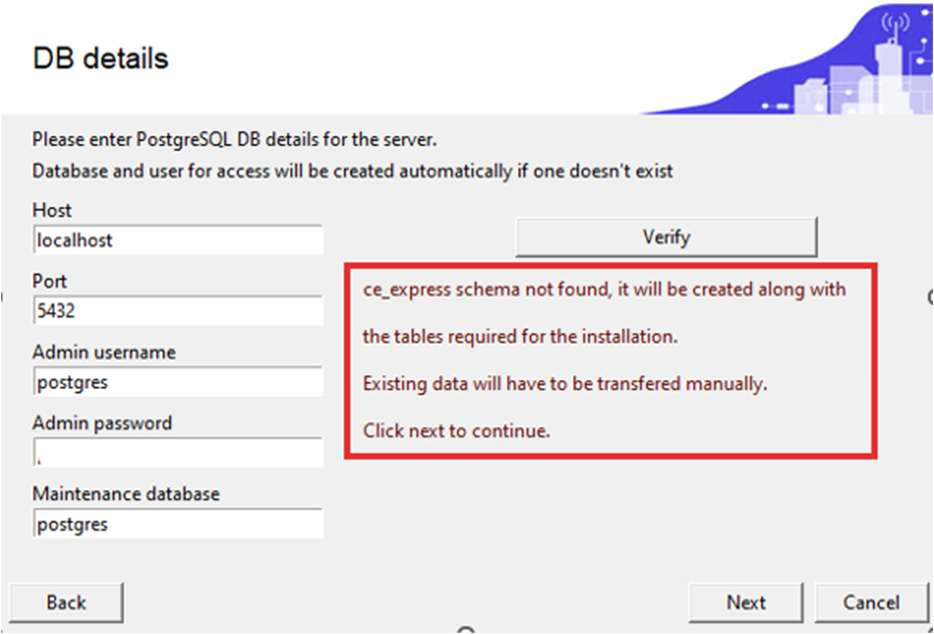
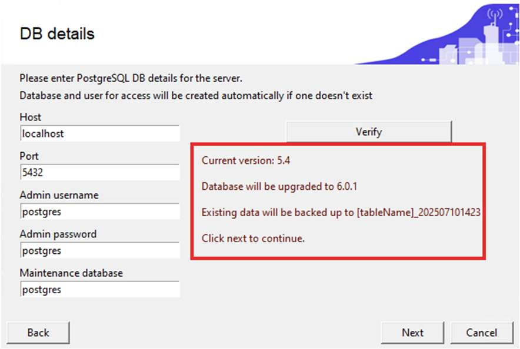
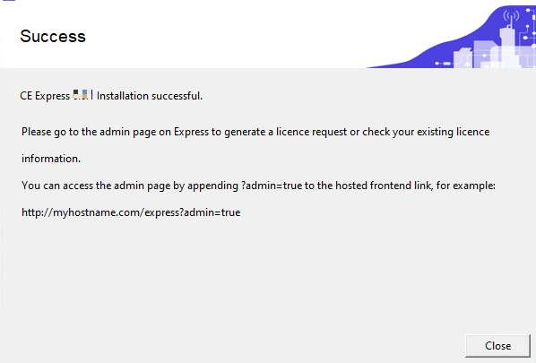
 such a case, the tables will be copied with the postfix "_date" to avoid conflicts:
Click “Next”. Installation will continue till finish:
2.3.5 Check Installation and the licence of the CE Express software.
Check windows services and there should be 3 CE Express services running:
such a case, the tables will be copied with the postfix "_date" to avoid conflicts:
Click “Next”. Installation will continue till finish:
2.3.5 Check Installation and the licence of the CE Express software.
Check windows services and there should be 3 CE Express services running:
Cellular Expert Express Administrator Guide 5.8 If windows services are running, open web browser and start CE Express administrator tool: http://CE_express_hostname/ceexpressfrontenfolder/?admin=true (Example: http://localhost/ceexp/?admin=true) Obtain the licence request file by clicking on the designated section. Send the obtained file to Cellular Expert support. Once you receive the license file, apply it by either clicking on the "Import License File" section or


 by dragging and dropping the file into that section:
Note: The browser could always redirect to https instead of using http. The administrator needs to include
the URL of CE Express to the insecure content list. It could be done using the browser’s settings:
Chrome: chrome://settings/content/insecureContent
Edge: edge://settings/content/insecureContent
Another way is to enable SSL support on CE Express (see chapter “Enable SSL support (optional)).
by dragging and dropping the file into that section:
Note: The browser could always redirect to https instead of using http. The administrator needs to include
the URL of CE Express to the insecure content list. It could be done using the browser’s settings:
Chrome: chrome://settings/content/insecureContent
Edge: edge://settings/content/insecureContent
Another way is to enable SSL support on CE Express (see chapter “Enable SSL support (optional)).
Cellular Expert Express Administrator Guide 5.8 2.3.6 Enable SSL support (optional) To enable SSL support prepare SSL certificate files. Into CE Express could be imported the pfx file (password required) (Optional: ssl.crt and ssl_pem.key could be imported). To import SSL files for CE Express open the CE admin tool using URL: http://CE_express_hostname/ceexpressfrontenfolder/?admin=true Open SSL tab: Import prepared SSL pfx file using “Import .pfx certificate file” section. After importing the SSL certificate, it needs to edit the configuration file located under CE Express frontend folder as described in section 2.3.2. Example “C:/inetpub/wwwroot/ceexp” Open “config.json” file with the text editor and change from “http” to “https” in the parameter “ceApiUrl”. Example: From "ceApiUrl": "http://[CE_express_hostname]:6062" To "ceApiUrl": "https://[CE_express_hostname]:6062" Restart Windows services: The “Coordinator” service must be started the last. When SSL is enabled use https protocol to access the CE Express application
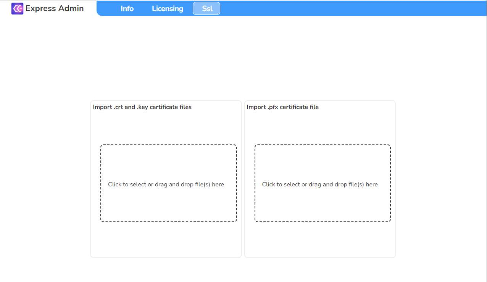
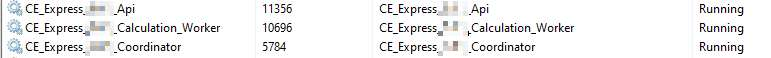
https://CE_express_hostname/ceexpressfrontenfolder (Example: https://localhost/ceexp ). 2.3.7 Configure CE Express to publish objects to the Portal for ArcGIS (optional) 2.3.7.1 Option: Arcgis Server without Image Server Publish provided geoprocessing tool "publishTif.sd" using Arcgis Server manager. The publishedCellular Expert Express Administrator Guide 5.8
GP tool example view:
Find and copy the GP tool's Rest URL:
Edit C:\Program Files\Cellular Expert\Express\config.json and change the three (3) parameters
required for publishing:
"PUBLISH_GEOPROCESSOR": "https://

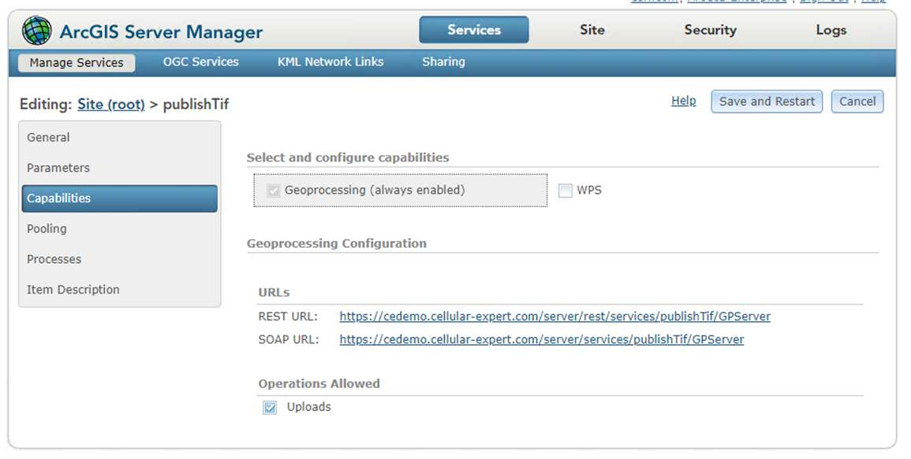
Restart Windows services. The “Coordinator” service must be started last. 2.3.7.2 Option: Arcgis Server with Image Server Edit C:\Program Files\Cellular Expert\Express\config.json and change the two (2) parameters required for publishing: "PUBLISH_GEOPROCESSOR": "", "PUBLISH_USERNAME": "USERNAME", "PUBLISH_PASSWORD": "PASSWORD" USERNAME and PASSWORD are Portal’s for Arcgis user's username and password. This user will be used to publish, and the published objects (raster or features) will be visible under this user's content. Restart Windows CE services. The “Coordinator” service must be started last.Cellular Expert Express Administrator Guide 5.8 2.3.8 Configure CE Express to send notifications (optional) You can enable email notifications to alert recipients when changes occur in the database. This feature is managed through the configuration file. Open the configuration file C:\Program Files\Cellular Expert\Express\config.json Locate and edit the following parameters to match your email service or SMTP server settings: "EMAIL_SERVICE_PROVIDER": "", "EMAIL_USERNAME": "", "EMAIL_PASSWORD": "", "SMTP_HOST": "", "SMTP_PORT": "", "SMTP_SECURE": false, "SMTP_TLS_CIPHERS": "SSLv3", "SMTP_TLS_REJECT_UNAUTHORIZED": false Leave "EMAIL_SERVICE_PROVIDER" empty if you are configuring notifications using a custom SMTP server. Ensure the remaining SMTP parameters (SMTP_HOST, SMTP_PORT, etc.) are correctly filled in according to your email provider’s requirements. Restart Windows CE services. The “Coordinator” service must be started last. 3. Prepare the application with own data
3.1 Prepare data files
In this chapter, you will find a description of the geographical file types that are used in Cellular Expert. Use the “Geodata sets” tool to upload all the required data to the CE Express:
Cellular Expert Express Administrator Guide 5.8 How to prepare geodata tif files is described below in this CE Express Administrator Guide. 3.1.1 General information The CE tools make use of three distinct GIS data layers to obtain high precision modelling of radio wave propagation losses: 1. Digital Terrain Model (DTM), also known as Digital Elevation Model (DEM), which describes Earth surface, i.e., path terrain profile in terms of ground elevation above uniform sea level. 2. Clutter height layer, delineating buildings and other such objects above Earth surface that may be considered to be principal impediments for radio wave propagation. 3. Clutter class layer, each pixel defines the ID of the clutter class, which the area belongs to. Usually derived from land use data. If building heights are included in the clutter height raster, the clutter classes raster must have building outlines separated into their own class ID. These types of GIS data describing the radio wave propagation path are illustrated in Fig. 1, which shows
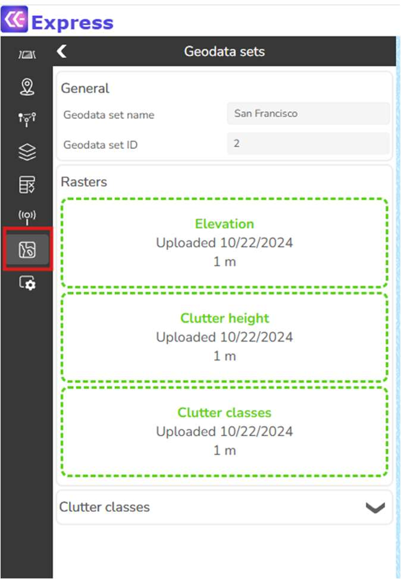
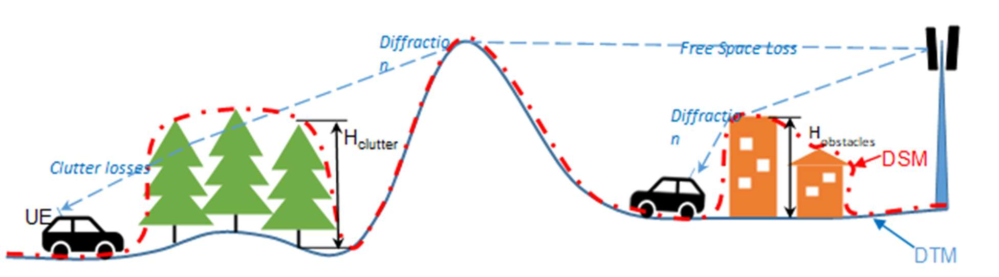
the key propagation effects with corresponding types of path loss components: Free Space Loss (FSL), losses due to diffraction over terrain protrusions and obstacles, and losses due to clutter penetration.Cellular Expert Express Administrator Guide 5.8 Sometimes users may have the Digital Surface Model (DSM) elevation data to represent the path profile. The DSM is usually obtained by air-based scanning of surface of the Earth that cannot distinguish between the actual terrain level and the elevation due to buildings, forests, or other types of ground cover. The well
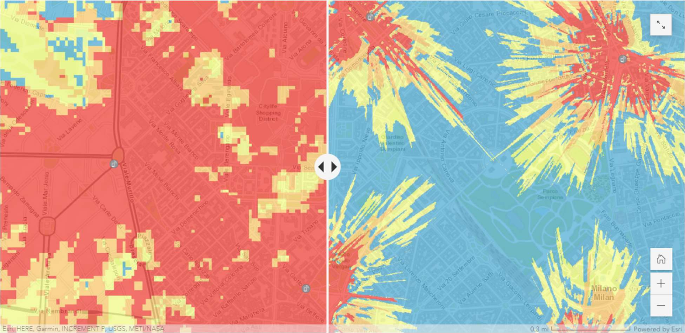
known and widely available sets of global DSM data include the USGS SRTM-1 and SRTM-3 as well as ASTER. Although a single path profile layer with DSM data could be used to model radio wave propagation, the path loss model will interpret it as a pure DTM, i.e., as if representing the homogeneous (and impenetrable for radio waves) Earth surface. Therefore, the results of calculated path losses, and accordingly the forecasted network coverage signal levels, will not be as precise and nuanced as if using distinct types of DTM and clutter layers. Another important factor defining the precision of path loss modelling is the resolution of GIS data used to represent DTM and clutter, or the DSM. For instance, based on our practical experience with available GIS data sets and the modern computational capabilities of our tools, CE recommends using the following resolution of path profiling data for modelling coverage of 4G/5G cellular networks: Rural areas: preferably 10 m, and at most 25 m, Urban areas: preferably 1 m, and at most 5 m. The comparative precision of modelling signal coverage in dense urban conditions when using respectively 25 m resolution ASTER DSM data and 1 m resolution Maxar DTM & Buildings data is shown in Fig. 2. To summarize, it is of critical importance to gather, configure and use suitable types of path profiling data with appropriate resolution to obtain reliable results of network coverage simulations. Only then the user may be confident in simulated results of network coverage in terms of calculated received signal levels and other derivative operational parameters. All three layers could be prepared using ArcGIS Pro tools: Projection, Copy Raster and Raster Calculator. 3.1.2 Geographic data Supported geographical data types:Cellular Expert Express Administrator Guide 5.8 Only GeoTIFF is supported. Mandatory geographical data: Elevation, or Digital Terrain Model (DTM) grid. Uploaded rasters have the following requirements: Must be in projected coordinate system Coordinate system units must be meters All rasters must have the same coordinate system Raster resolution in X and Y axis must match 3.1.2.1 Elevation, or Digital Terrain Model (DTM) Grid (Mandatory) The Digital Terrain Model (DTM), also known as Digital Elevation Model (DEM), represents the Earth’s ground level above sea level. Each raster pixel has its height value. A sample DTM raster is presented below. Each pixel represents 5 square meters with its height value. In reality, within a one-pixel area, the height is not the same everywhere. Thus, the pixel’s height value is the height in its center or the maximum. The smaller the pixels, the more accurate is the grid - but also more data to calculate. Prepare DTM raster 3.1.2.1.1.1 Projection The raster must use a Projected Coordinate System. To check the coordinate system of your raster, use the Properties function in ArcGIS Pro. Add the raster to your project, right-click on it, and select Properties.
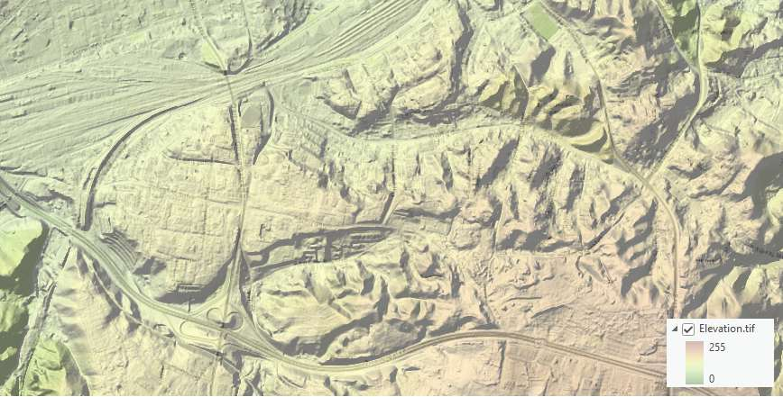
Then, go to the Source tab > Spatial Reference and check the Coordinate System type parameter to confirm it is in a Projected Coordinate System.Cellular Expert Express Administrator Guide 5.8 If your raster is in a Geographic Coordinate System or needs a different projection, use the Geoprocessing

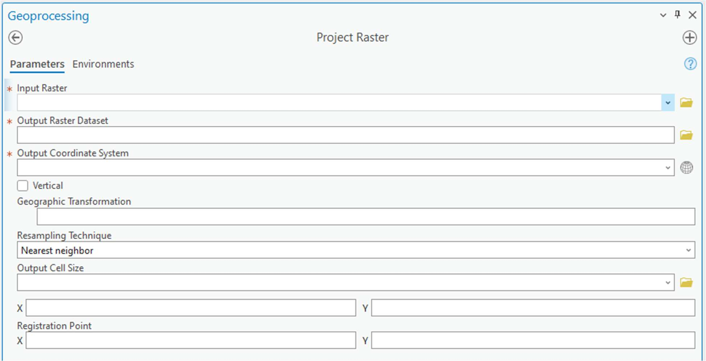
Project Raster tool to update it. In the Output Coordinate System, specify a new coordinate system. It is recommended to use a UTM coordinate system under the WGS 1984 projection.
Cellular Expert Express Administrator Guide 5.8 You can find the appropriate UTM zone for your area here: https://www.arcgis.com/apps/mapviewer/index.html?layers=b294795270aa4fb3bd25286bf09edc51 3.1.2.2 Clutter classes grid This raster type provides information about land use. The naming and classification of land use types may

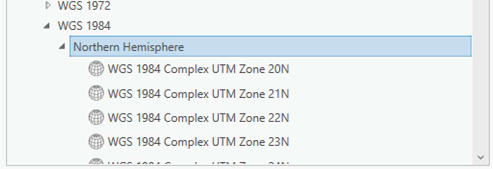
vary. An example is the Sentinel-2 Land Cover dataset from the Living Atlas: Living Atlas Sentinel-2 Land CoverCellular Expert Express Administrator Guide 5.8 This data is freely available worldwide. Prepare Clutter Classes raster 3.1.2.2.1.1 Projection It must have the same coordinate system as your elevation.tif raster. If your raster has different coordinate
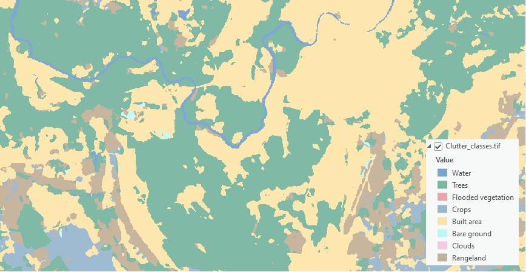
system, then use the Geoprocessing tool → Project Raster to fix it.
Cellular Expert Express Administrator Guide 5.8 In the Output Coordinate System you would need to define the same coordinate system as your elevation.tif
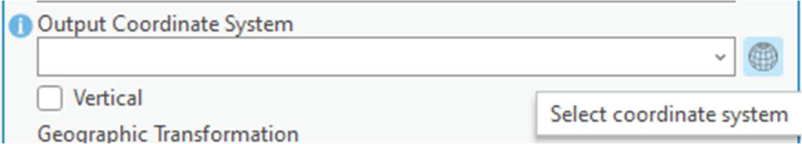
raster. Click on Select Coordinate System button. And choose the same coordinate system as your elevation.tif. 3.1.2.3 Clutter height Represents actual clutter heights, which override the default heights specified in the Clutter table. The clutter heights raster requires the accompanying clutter classes raster and cannot be used independently.
Cellular Expert Express Administrator Guide 5.8 A clutter height raster can be derived from a Digital Surface Model (DSM) raster and a Digital Terrain Model
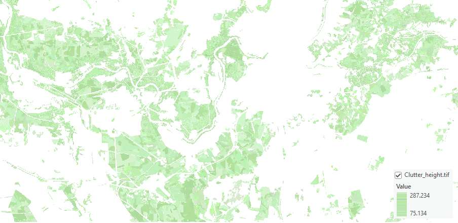
(DTM) raster using the ArcGIS Raster Calculator tool. To access this tool, open Geoprocessing tools and navigate to Spatial Analyst > Map Algebra > Raster Calculator. Use the following formula: DSM – DTMCellular Expert Express Administrator Guide 5.8 The calculation output will be the difference between the DSM and DTM grids, representing the clutter heights. Prepare Clutter Height raster 3.1.2.3.1.1 Projection It must have the same coordinate system as your elevation.tif raster. If your raster has different coordinate
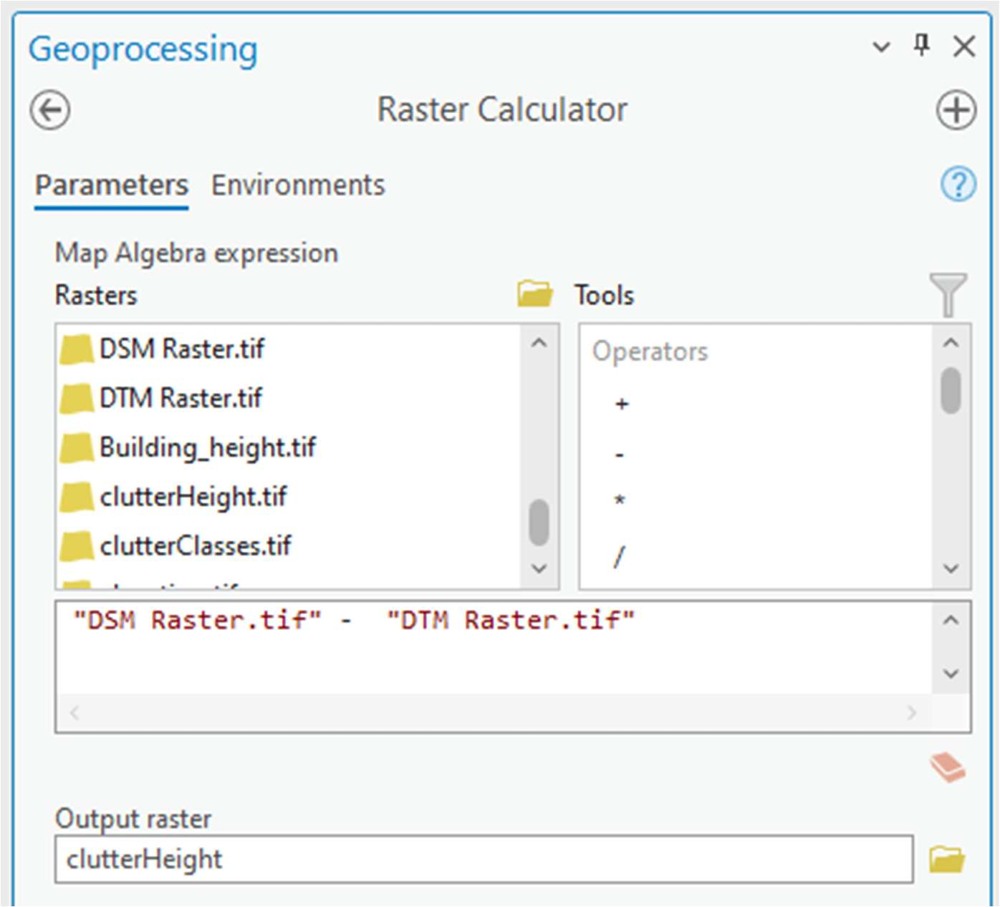
system, then use the Geoprocessing tool → Project Raster to fix it.Cellular Expert Express Administrator Guide 5.8 In the Output Coordinate System you would need to define the same coordinate system as your elevation.tif
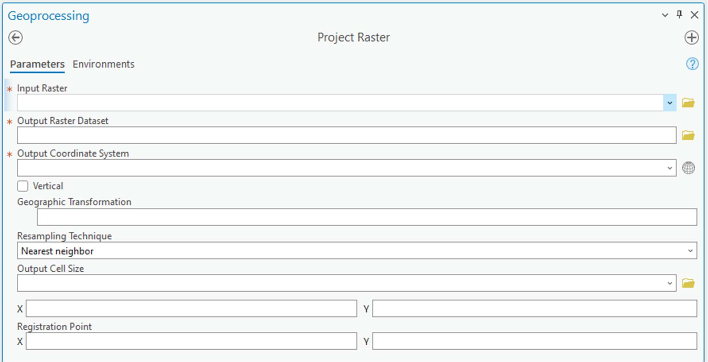
raster. Click on Select Coordinate System button. And choose the same coordinate system as your elevation.tif.
Cellular Expert Express Administrator Guide 5.8 3.1.3 Antennas The Antenna pattern files in .txt format should be prepared and could be imported into the CE database using the CE Express antenna import tool. The CE Express application uses the Planet antenna pattern
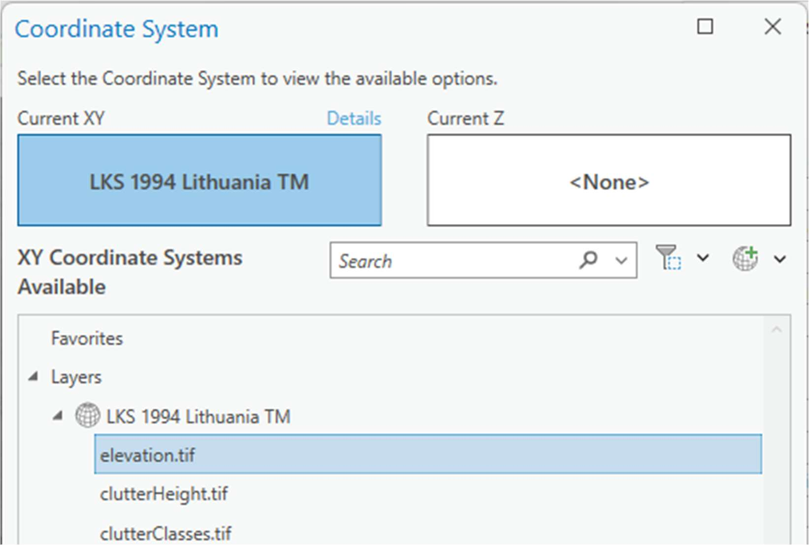
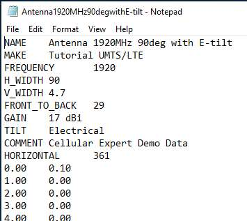
format. This format consists of a header, horizontal and vertical records. Example: After import of the antenna, the antenna id could be used in the cells data table.Cellular Expert Express Administrator Guide 5.8
3.2 Create new workspace in CE Express
To create a new workspace using start CE Express using URL
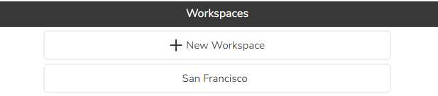
 http://CE_express_hostname/ceexpressfrontenfolder
(Example: http://localhost/ceexp )
Login as user with administrator rights (user provided during setup)
In the workspace list click “+ new Workspace” button:
In the window describe the workspace:
Workspace name: must be the name of a newly created folder.
Geodata folder path: must be the physical path of the newly created folder.
Coordinate system EPSG: enter coordinate system’s code. 4326 is WGS84.
Extent: describe the extent of the workspace.
Calculations: enable or disable parameters if they are not used.
Extra layers: add additional layers form the other sources to be visualized in this new workspace.
For the administrators the new workspace will be visible after creation.
http://CE_express_hostname/ceexpressfrontenfolder
(Example: http://localhost/ceexp )
Login as user with administrator rights (user provided during setup)
In the workspace list click “+ new Workspace” button:
In the window describe the workspace:
Workspace name: must be the name of a newly created folder.
Geodata folder path: must be the physical path of the newly created folder.
Coordinate system EPSG: enter coordinate system’s code. 4326 is WGS84.
Extent: describe the extent of the workspace.
Calculations: enable or disable parameters if they are not used.
Extra layers: add additional layers form the other sources to be visualized in this new workspace.
For the administrators the new workspace will be visible after creation.
Cellular Expert Express Administrator Guide 5.8 Antennas or cells for the new workspace could be loaded using CE Express environment and tools.